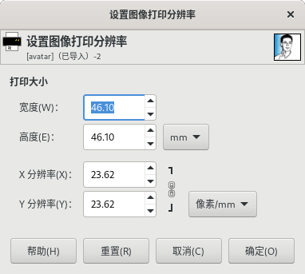

图像→打印大小
此命令可以设置图像的打印尺寸及分辨率。
此命令不会修改图像中的像素数量，也不会对图像重新采样。
如果要通过重新采样来修改图像的尺寸，请使用菜单 图像→缩放图像 命令。

图像→打印大小
这里的打印分辨率(ppi)，不是打印机分辨率(dpi)；打印分辨率决定了打印图像时单位长度上分布的像素数量。
不要将图像的打印分辨率(ppi)与打印机的打印分辨率(dpi)相混淆，打印机的打印分辨率(dpi)是打印机的功能，反映打印机的物理性能参数，以dpi(每英寸点数{dots per inch})来表示；打印机通常要用多个物理打印点来打印一个图像像素。
此对话框刚打开时，显示的分辨率是图像的原始分辨率。
如果提高这里的分辨率(ppi)数值，那么物理打印尺寸会变小，因为单位长度上分布的像素数量变多了，而像素总数量没有改变。
同理，调整图像的物理打印尺寸也会导致图像的打印分辨率(ppi)发生变化。
增加分辨率数值通常可以增加打印效果的清晰度，代价是打印尺寸变小。这与菜单 图像→缩放图像 命令缩小图像不同，因为这里没有删除像素。
宽度；高度
这里可以输入打印的宽度和高度。
可以从下拉列表中选择不同的单位。
如果改变宽度/高度，X分辨率/Y分辨率的值也会相应地自动改变。
如果两个分辨率值保持关联，那么图像的宽度与高度的比例也会自动保持不变。
如果您想独立设置这些值，只需单击”链”符号断开关联即可。
X分辨率/Y分辨率
图像中的像素数量保持不变的情况下，您可以根据图像的物理打印宽度和高度来计算X分辨率/Y分辨率，也可以根据X分辨率/Y分辨率来计算图像的物理打印宽度和高度。
X分辨率/Y分辨率可以关联起来，以保持它们的比例不变。
“链”符号表示这些值是关联在一起的。单击“链”符号可以断开关联，这样可以分别单独设置这些值。